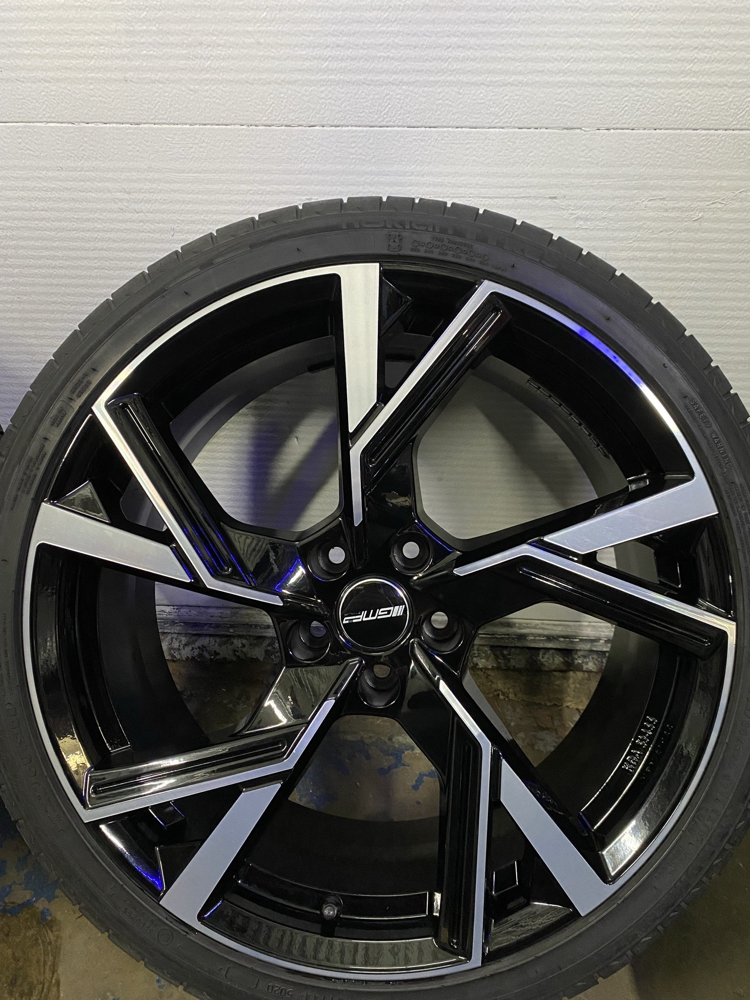

This Audi is named Audi A6 (C7) 3.0 Bitdi 2013.
Production years on this typical Audi are 2011-2018. After that came the C8 model 2018-->.
I bought this car in april 2021. It has been the best car so far for sure, Audi has done a great work on this ridiculously fast diesel car.
I can tell that many people don't have this kind of looking family estate car that i have. Its pretty rare in Finland, and thats what i like.
Parts and mods
Engine: 3.0 BiTDI
Rims: GMP Angle Black Diamond 20"

Engine
My engine produces 440hp (horsepower) and 880 nm of torque.
I have done a few 0-100kmh runs, the best one was 4.3 seconds. I have not recorded the 100-200 kmh time yet so i cant tell what that is.
1/4 (varttimaili) mile time on this audi is 12.15 seconds.
This car is powerfull and many people think that it spends a lot of fuel, but it can actually be very efficient car asswell.
If i do pulls and insane speeding it takes like 12-14 liters/100km. But if i drive normally "saving the planet mode" it takes about 7 liters/100km.
This car has different types of mods, heres few of them:
Custom race chip tuning on motor and gearbox by Revo
Revo Rs intake and Revo's custom free flowing airfilter
Darkside's bigger stern tube
Darkside's Bigger intercooler
2700bar Rail pressure sensor for my nozzles
3" stainless steel Straight pipe
3,5" Downpipe and Diesel particular filter delete kit